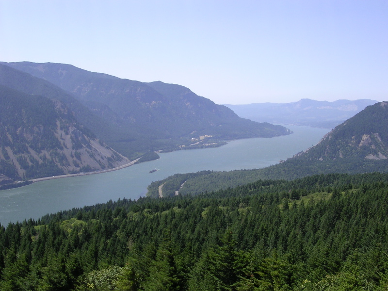
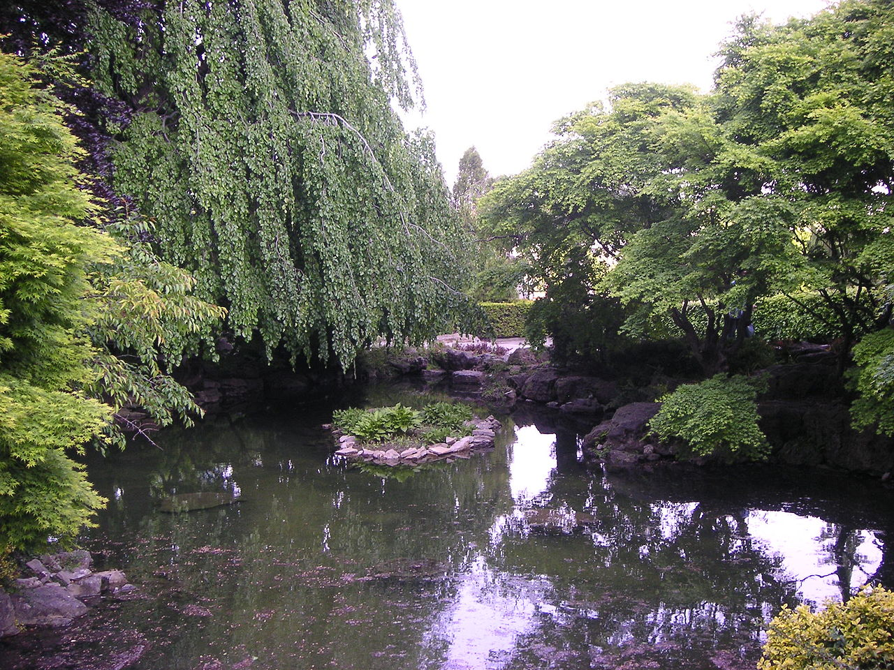

Rio
Um curso natural de água, usualmente de água doce, que flui no sentido de um oceano, um lago, um mar, ou um outro rio

Lagoa
Um corpo de água com pouco fluxo, mas geralmente sem água estagnada, podendo ser natural ou feita pelo Homem (artificial), e é usualmente menor que um lago
 Açude
Açude
Barragem ou Represa, é uma barreira artificial, feita em cursos de água para a retenção de grandes quantidades de água. A sua utilização é sobretudo para o abastecimento de água zonas residenciais, agrícolas, industriais, produção de energia elétrica (energia hidráulica), ou regularização de um caudal.